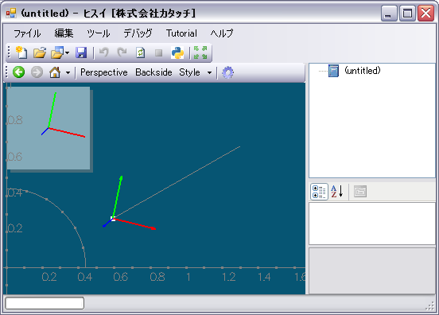

〜 OpenGLプラットフォーム「ヒスイ」 チュートリアル 〜
OpenGL の描画命令を使用して、ヒスイ上に直線を描画する方法を解説します。開発チュートリアル「Hello World を作ってみよう」を理解していることを前提とします。
「Hello World を作ってみよう」と同様の手順で、下記のように DrawLine コマンドを作成します。
[Hisui.Ctrl.Command("直線描画")]
static void DrawLine()
{
}
[Hisui.Ctrl.Command("直線描画")]
static void DrawLine( Hisui.Ctrl.IContext con )
{
}
コンテキスト情報からは View オブジェクトを取得することが出来ます。その View に直線シーンを追加したいのです。
ではいよいよ直線を描画してみましょう。ここでは原点から (1, 1, 1) までの直線を描画することにします。
描画には OpenGL を用います。ヒスイでは OpenGL を C# で利用するためのライブラリとして Hisui.OpenGL.dll モジュールを用意しています。ファイルの先頭で using Hisui.OpenGL ; と記述しておくと便利でしょう。
次のように、con.View.SceneGraph.WorldScenes に直線を描画する匿名メソッド（delegate）を追加します。なお、匿名メソッドの引数 ISceneContext はここでは使いませんので、今は気にしないでください。
using Hisui.OpenGL ;
...
[Hisui.Ctrl.Command("直線描画")]
static void DrawLine( Hisui.Ctrl.IContext con )
{
con.View.SceneGraph.WorldScenes.Add( sc =>
{
GL.glBegin(GL.GL_LINES);
GL.glVertex3d(0, 0, 0);
GL.glVertex3d(1, 1, 1);
GL.glEnd();
}
);
}

直線が表示されたら、ビューを回転したり拡大したりして遊んでみましょう(^^;
匿名メソッドでも描画できるのですが、今後の拡張のためにキチンとSceneクラスを作ることにしましょう。Sceneクラスは Hisui.Graphics.IScene インターフェイスを実装することで作ることが出来ます。IScene インターフェイスは次のように定義されています。
namespace Hisui.Graphics
{
public interface IScene
{
void Draw( ISceneContext context ) ;
}
}
シンプルですね。Draw()メソッドがひとつあるだけです。これを実装するとこうなります。
class LineScene : Hisui.Graphics.IScene
{
public void Draw(Hisui.Graphics.ISceneContext sc)
{
GL.glBegin(GL.GL_LINES);
GL.glVertex3d(0, 0, 0);
GL.glVertex3d(1, 1, 1);
GL.glEnd();
}
}
DrawLine() コマンドを次のように書き換えます。
con.View.SceneGraph.WorldScenes.Add(new LineScene());
直線の始点、終点がハードコーディングされているのはカッコ悪いので、次のように修正しておきましょう。
class LineScene : Hisui.Graphics.IScene
{
Hisui.Geom.Point3d _p1;
Hisui.Geom.Point3d _p2;
public LineScene(Hisui.Geom.Point3d p1, Hisui.Geom.Point3d p2)
{
_p1 = p1;
_p2 = p2;
}
public void Draw(Hisui.Graphics.ISceneContext sc)
{
GL.glBegin(GL.GL_LINES);
GL.glVertex3d(_p1.x, _p1.y, _p1.z);
GL.glVertex3d(_p2.x, _p2.y, _p2.z);
GL.glEnd();
}
}
DrawLine() コマンドは次のようになります。
var p1 = new Hisui.Geom.Point3d(0, 0, 0);
var p2 = new Hisui.Geom.Point3d(1, 1, 1);
con.View.SceneGraph.WorldScenes.Add(new LineScene(p1, p2));
Copyright © 2010, 株式会社カタッチ
http://www.quatouch.com